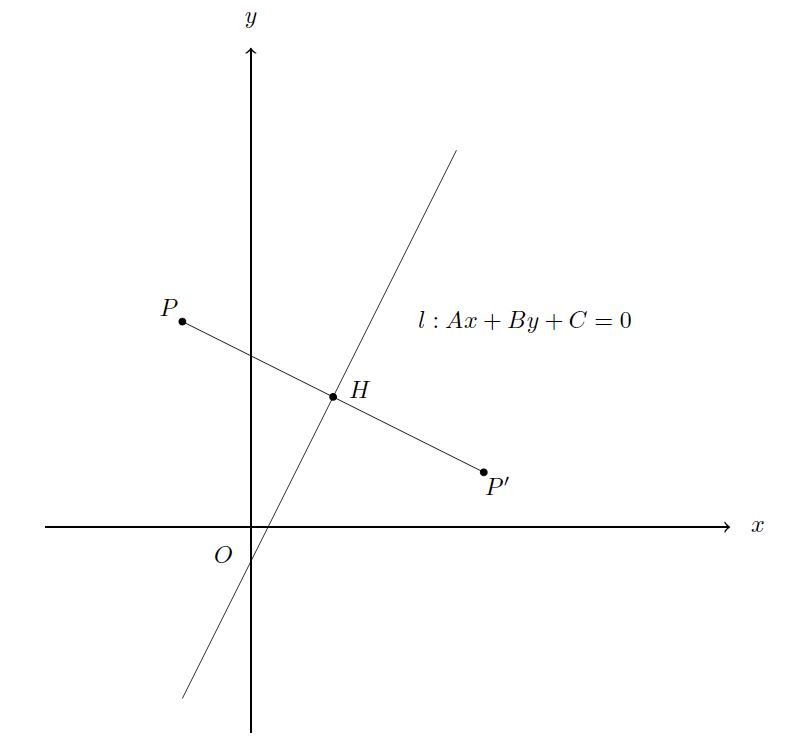
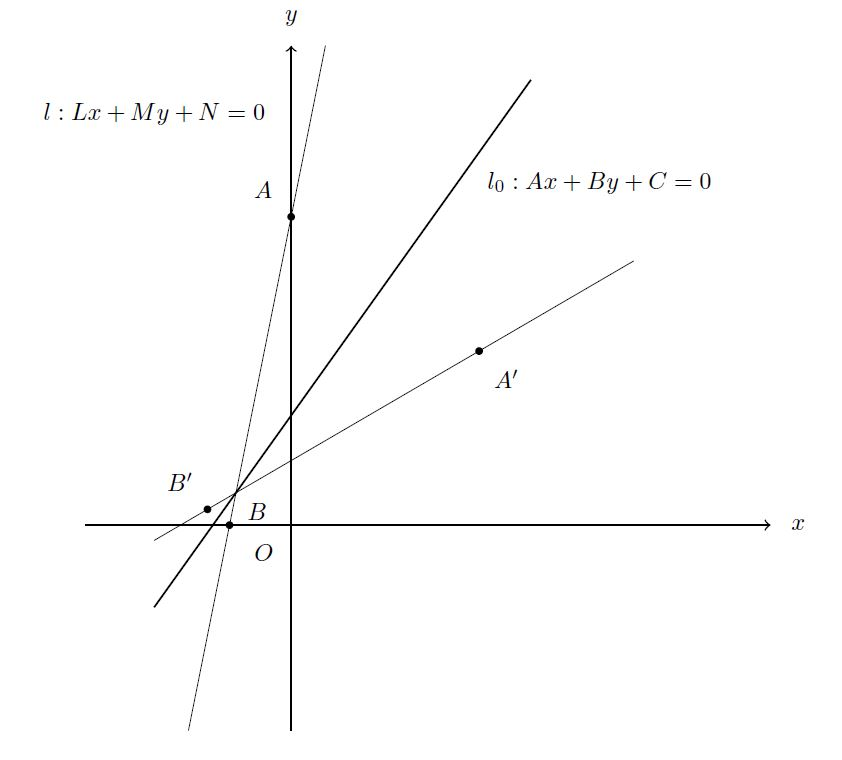
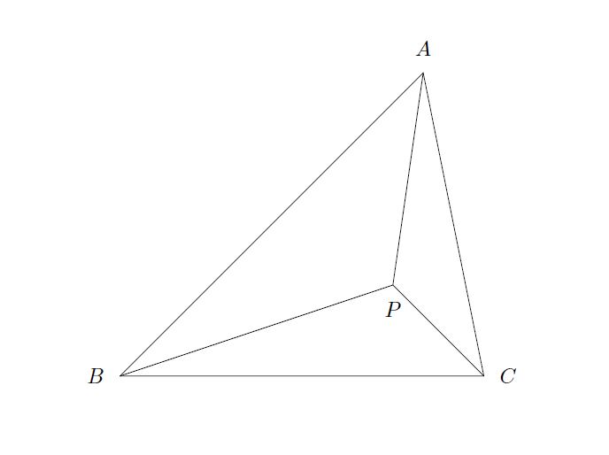
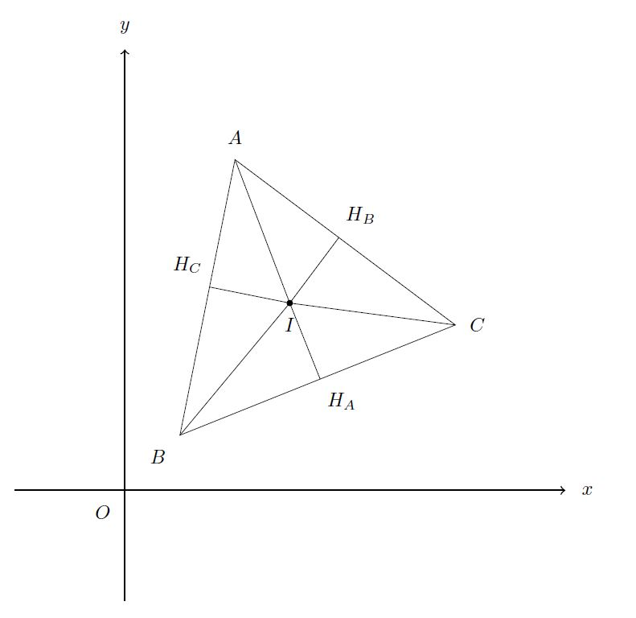
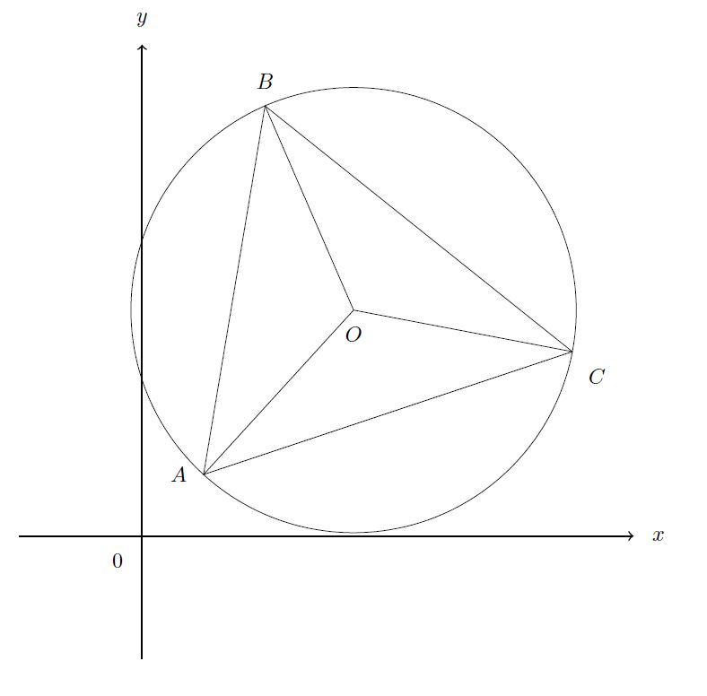
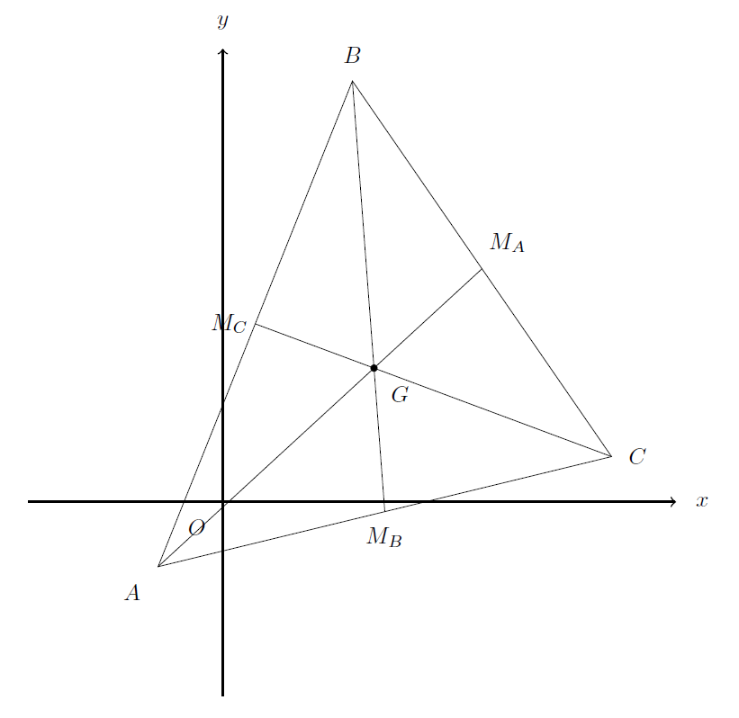
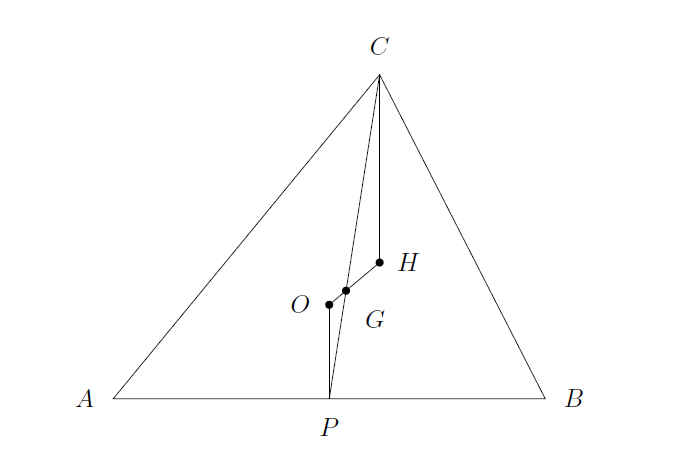
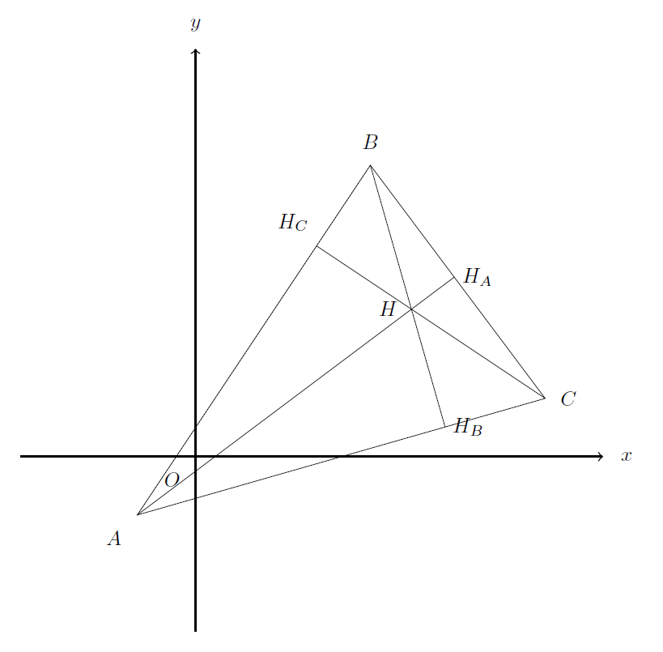
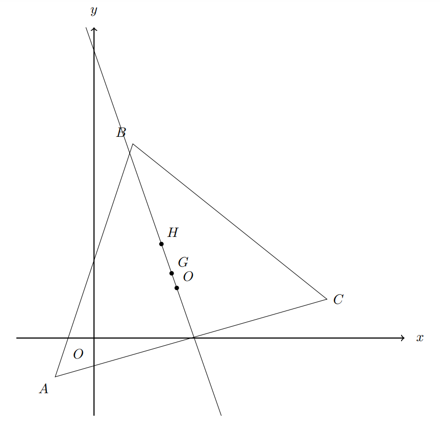

论系
0x01.一个点关于任意直线的对称点
P' 为 P({x_0},{y_0})关于直线l:Ax+By+C=0的对称点。

图中AB所在直线即为 l。
由AB\bot PP'可得k_{PP'} \cdot k_{AB}=-1，那么
k_{PP'}=-{1\over{k_{AB} } }=-{1\over{-{B\over{A} } } }={\cfrac{A}{B} }
又直线经过 P 点，有 PP':y={B\over{A}}(x-{x_0})+{y_0}，又有 H 为直线 PP' 与 AB 的交点，故
H({ {B^2{x_0}-AB{y_0}-AC}\over{A^2+B^2} },{ \cfrac{A^2{y_0}-AB{x_0}-BC}{A^2+B^2} })
又根据H为P,P'两点的中点，可以推算出，
P'({ {(B^2-A^2){x_0}-2AB{y_0}-2AC}\over{A^2+B^2} },{ {(A^2-B^2){y_0}-2AB{x_0}-2BC}\over{A^2+B^2} })
0x02.一条直线关于任意直线的对称直线
l'为l:Lx+My+N=0关于直线l_0:Ax+By+C=0的对称直线。

我们作出l与y,x轴的交点A,B，作两点关于l_0的对称点A',B'，根据0x01中的公式，可以推算出
A'(\cfrac{2ABN-2ACM}{M(A^2+B^2)},\cfrac{N(B^2-A^2)-2BCM}{M(A^2+B^2)}),
B'(\cfrac{N(A^2-B^2)-2ACL}{L(A^2+B^2)},\cfrac{2ABN-2BCL}{L(A^2+B^2)})
那么l'便是过A',B'两点的直线，可算出
k=\cfrac{\cfrac{2ABN-2BCL}{L(A^2+B^2)}-\cfrac{N(B^2-A^2)-2BCM}{M(A^2+B^2)}}{\cfrac{N(A^2-B^2)-2ACL}{L(A^2+B^2)}-\cfrac{2ABN-2ACM}{M(A^2+B^2)}}=\cfrac{2ABM+L(A^2-B^2)}{-2ABL+M(A^2-B^2)}
从而
b=\cfrac{N(B^2-A^2)-2BCM}{M(A^2+B^2)}-\cfrac{2ABM+L(A^2-B^2)}{-2ABL+M(A^2-B^2)} \times \cfrac{2ABN-2ACM}{M(A^2+B^2)}=\cfrac{2ACL+2BCM-N(A^2+B^2)}{-2ABL+M(A^2-B^2)}
推算出l'的一般式，
l':(2ABM+L(A^2-B^2))x+(2ABL+M(B^2-A^2))y+2ACL+2BCM-N(A^2+B^2)=0
0x03.三角形的内心坐标公式
备用芝士：奔驰定理

对于\triangle ABC内的任意一点P，有
S_{\triangle PBC} \cdot \vec{PA} + S_{\triangle PAC} \cdot \vec{PB} + S_{\triangle PAB} \cdot \vec{PC} = 0
正题

由奔驰定理，知
$$
S_{\triangle IBC} \cdot \vec{IA} + S_{\triangle IAC} \cdot \vec{IB} + S_{\triangle IAB} \cdot \vec{IC} = 0
$$
因为I是内心，所以H_{A}I = H_{B}I = H_{C}I = h，故
\left\{
\begin{aligned}
S_{\triangle IAB} = \cfrac{1}{2}AB \cdot IH_{C} = \cfrac{1}{2}AB \cdot h\\
S_{\triangle IBC} = \cfrac{1}{2}BC \cdot IH_{A} = \cfrac{1}{2}BC \cdot h\\
S_{\triangle IAC} = \cfrac{1}{2}AC \cdot IH_{B} = \cfrac{1}{2}AC \cdot h\\
\end{aligned}
\right.
以上式子代入得
AB \cdot \vec{IC} + BC \cdot \vec{IA} + AC \cdot \vec{IB} = 0
设A(x_A,y_A),B(x_B,y_B),C(x_C,y_C),I(x,y),a=BC,b=AC,c=AB，可知
\left\{
\begin{aligned}
\vec{IA} = (x_A - x, y_A - y) \\
\vec{IB} = (x_B - x, y_B - y) \\
\vec{IC} = (x_C - x, y_C - y) \\
\end{aligned}
\right.
代入，可以得到
\left\{
\begin{aligned}
a (x_A - x) + b (x_B - x) + c (x_C - x) = 0 \\
a (y_A - y) + b (y_B - y) + c (y_C - y) = 0
\end{aligned}
\right.
得结论
I(\cfrac{ax_A+bx_B+cx_C}{a+b+c}, \cfrac{ay_A+by_B+cy_C}{a+b+c})
0x04.三角形外心的坐标公式

设A(x_A,y_A),B(x_B,y_B),C(x_C,y_C)，\triangle ABC的外心O(x_O,y_O)
则由外心的性质，可以得到OA=OB=OC，即
\sqrt{(x_A - x_O)^2 + (y_A - y_O)^2} = \sqrt{(x_B - x_O) ^ 2 + (y_B - y_O)^2} = \sqrt{(x_C - x_O)^2 + (y_C - y_O)^2}
不难解出O的坐标为
O(\cfrac{\Sigma(x_A^2 + y_A^2)(y_B - y_C)}{2\Sigma x_A(y_B - y_C)},
\cfrac{\Sigma(x_A^2 + y_A^2)(x_B - x_C)}{2\Sigma y_A(x_B - x_C)})
0x05.三角形重心坐标公式

设A(x_A, y_A), B(x_B, y_B), C(x_C, y_C), \triangle ABC的重心为G(x_G, y_G)
并设出三角形三条边的中点M_A, M_B, M_C
注意到重心的性质 : \cfrac{AG}{GM_A}=\cfrac{BG}{GM_B}=\cfrac{CG}{GM_C}=2
由M_A为BC的中点，可知M_A(\cfrac{x_B + x_C}{2}, \cfrac{y_B + y_C}{2})
又知G为AM_A的三等分点，知
G(\cfrac{x_A + 2 \times \cfrac{x_B +x_C}{2}}{3}, \cfrac{y_A + 2 \times \cfrac{y_B +y_C}{2}}{3})
即知三角形重心公式为
G(\cfrac{x_A + x_B + x_C}{3}, \cfrac{y_A + y_B + y_C}{3})
0x06.三角形的垂心坐标公式
前置芝士: 欧拉定理

对于任意三角形ABC，其重心G，圆心O，垂心H三点共线，且GH=2OG
正题

我们已知圆心O的公式与重心G的坐标公式后，大可不必走弯路
直接通过欧拉定理知
G(\cfrac{2x_O+x_H}{3}, \cfrac{2y_O+y_H}{3})
代入公式，可得
H(x_A + x_B + x_C - \cfrac{\Sigma(x_A^2 + y_A^2)(y_B - y_C)}{\Sigma x_A(y_B - y_C)},
y_A + y_B + y_C - \cfrac{\Sigma(x_A^2 + y_A^2)(x_B - x_C)}{\Sigma y_A(x_B - x_C)})
0x07.三角形欧拉线的一般式

即解过O与G的直线解析式，易计算得
\begin{aligned}
&(\Sigma (x_C - x_B)(y_A^2 + 3x_Bx_C + 2y_By_C))x\\
+&(\Sigma (y_C - y_B)(x_A^2 + 2x_Bx_C + 3y_By_C))y\\
+&\Sigma x_Ax_B(x_A^2 - x_B^2) + \Sigma y_Ay_B(y_A^2 - y_B^2)\\
+&\Sigma x_Ay_A^2(x_B - x_C) + \Sigma x_A^2y_A(y_B - y_C)=0
\end{aligned}